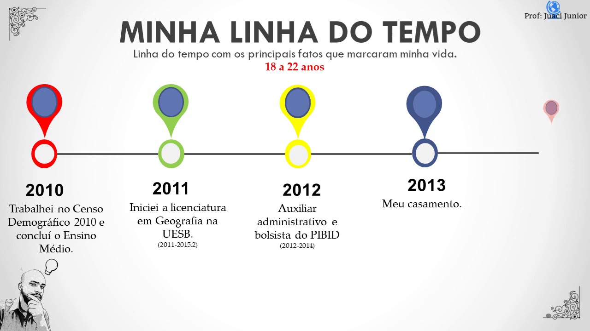

Linha temporal
Processo de urbanização e consequências que esse processo gerou. Faça uma linha temporal virtual sobre o tema para publicar em seu portfólio.

Abrir imagem completa ↗Sociedade, história e suas transformações.
Processo de urbanização e consequências que esse processo gerou. Faça uma linha temporal virtual sobre o tema para publicar em seu portfólio.

Abrir imagem completa ↗Processo de urbanização e consequências que esse processo gerou. Faça um texto sobre o tema para publicar em seu portfólio.